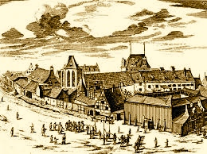

Turysto,
Gdańsk to duże miasto z bogatą historią. Nie trać czasu i zwiedź najbardziej znane zabytki tego pięknego miejsca.
Dzięki tej aplikacji to bardzo proste. Wybierz zabytek i dojdź do niego dzięki mapie google.
NIEPOWTARZALNE FUNKCJE

Mapa z odległościami
Mapa pokazująca lokalizację zabytków oraz obliczająca odległości do nich.

Polecane
Funkcjonalność polegająca na możliwości opiniowania i polecania konkretnych zabytków.

Popularne
Zabytki najczęściej oglądane przez odwiedzających.
Ulubione
Lista zabytków, które najbardziej przypadły do gustu naszym użytkownikom.
Neptun...
Portowe klimaty...
Oryginalne gdańskie przysmaki...
Kameralne uliczki...
Gładka tafla Motławy...
Ciekawa architektura...
Dziękujemy, że nas odwiedziłeś. Chcesz być na bieżąco?
Zostaw info, a my skontaktujemy się z Tobą!